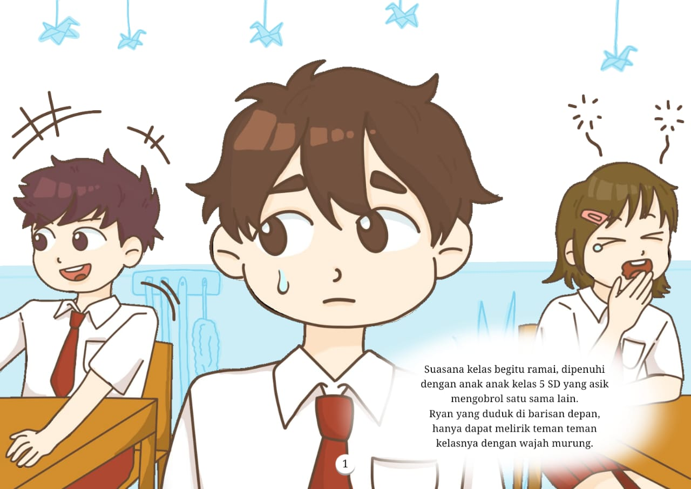
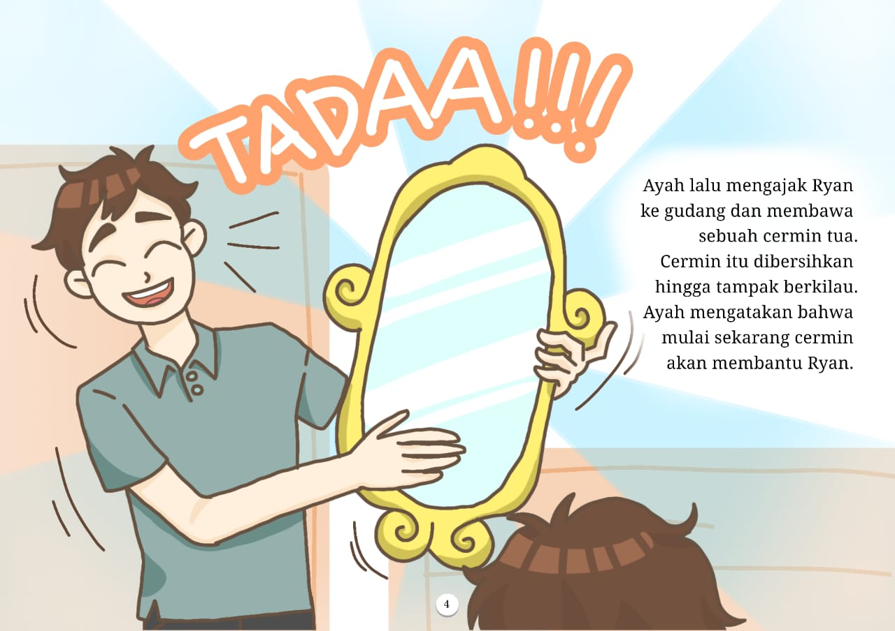
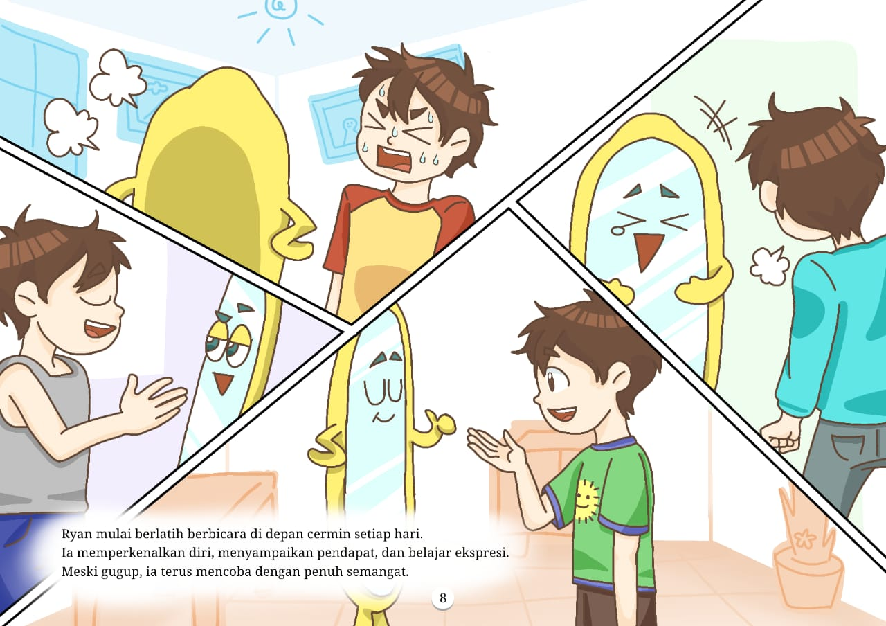
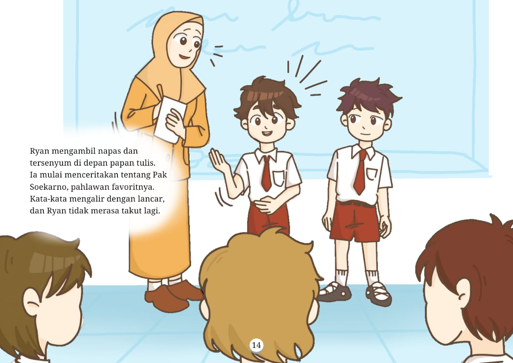

Suasana kelas begitu ramai, dipenuhi dengan anak anak kelas 5 SD yang asik mengobrol satu sama lain.
Ryan yang duduk di barisan depan, hanya dapat melirik teman teman kelasnya dengan wajah murung.
Ketika Ryan hendak berbicara di depan kelas, semuanya terasa hilang dari pikirannya. Wajah-wajah teman-temannya terasa begitu menakutkan baginya.
Akhirnya, Ryan melarikan diri keluar meninggalkan kelas yang menakutkan itu.
Di rumah, Ryan terlihat lesu dan tak bersemangat. Ia memikirkan kenapa dirinya selalu gagal berbicara di depan umum.
Ayahnya memanggil dan mengajaknya untuk bercerita.
Ayah lalu mengajak Ryan ke gudang dan membawa sebuah cermin tua. Cermin itu dibersihkan hingga tampak berkilau.
Ayah mengatakan bahwa mulai sekarang cermin akan membantu Ryan.
Tiba-tiba, cermin itu bergerak. Cermin itu memperkenalkan diri sebagai Taro, sahabat latihan Ryan.
Ryan menceritakan semua kegelisahannya dan rasa takutnya. Taro pun berjanji akan melatih Ryan agar lebih percaya diri. Ryan pun mulai berlatih di depan taro.
Taro tersenyum,
"Tidak buruk juga," ucapnya.
"Jangan berbohong Taro, aku masih sangat gugup"
balas Ryan sambil menatap taro dengan wajah murung,
"Perkenalanku jelek ya?"
Taro terdiam sejenak untuk berpikir, dan membalas,
"Ryan, terkadang kita tidak perlu terlalu mempedulikan seseorang."
"Kamu tidak boleh menganggap dirimu sendiri remeh karena pendapat orang lain, harus percaya diri!"
Ucap Taro dengan senyuman lebar menatap Ryan yang menunduk.
"Nah cara agar kamu percaya diri adalah..."
Ryan melirik Taro menunggu solusi.
"Kamu harus terbiasa! Gunakan aku!"
Ryan mulai berlatih berbicara di depan cermin setiap hari. Ia memperkenalkan diri, menyampaikan pendapat, dan belajar ekspresi.
Meski gugup, ia terus mencoba dengan penuh semangat.
Di meja makan, Ryan menceritakan pada ayah bahwa ia merasa lebih baik. Ayah tersenyum dan mengatakan bahwa cara ini pernah digunakan oleh Soekarno untuk mempersiapkan dirinya berpidato di depan rakyat Indonesia. Ryan pun merasa bangga mengikuti jejak sang proklamator.
Keesokan harinya di sekolah, Ryan tampak lebih ceria dan berani. Saat pelajaran dimulai, Bu Nova memberikan tugas untuk menceritakan tentang pahlawan.
Semua anak berebut mengangkat tangan untuk maju ke depan. Bu Nova memilih Ryan dan Farel untuk bercerita.
Farel tampil lebih dulu dan menceritakan tentang Pak Hatta dengan semangat. Semua anak kagum dan bertepuk tangan meriah.
"Nah sekarang ayo kita dengarkan cerita dari Ryan"
Ryan mengambil napas dan tersenyum di depan papan tulis. Ia mulai menceritakan tentang Pak Soekarno, pahlawan favoritnya. Kata-kata mengalir dengan lancar, dan Ryan tidak merasa takut lagi.
Seisi kelas memberikan tepuk tangan meriah untuk Ryan. Ia merasa lega karena akhirnya bisa berbicara di depan banyak orang.Taro dan ayah telah membantunya melewati rasa takutnya.
Ryan menyadari bahwa berbicara di depan umum tidak semenakutkan itu. Ia tersenyum, bangga pada dirinya sendiri yang sudah berani mencoba.
Kini, Ryan tahu bahwa keberanian datang dari kebiasaan dan percaya diri.